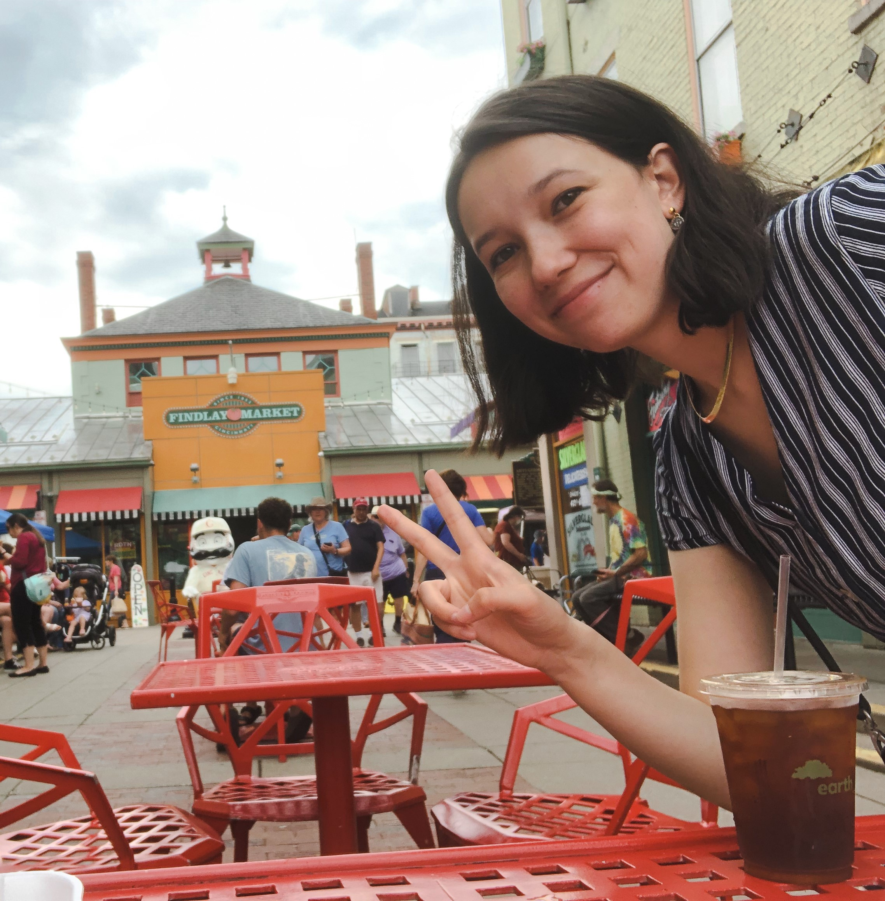

LUCY J CHEN
About ↗
Workshop ↗
Contact
lulujchen@gmail.com
lucychen@pghcitypaper.com
(for Pittsburgh illustraors looking for work)
Download
CV
Follow
Instagram
LinkedIn
Goodreads
Hi, I’m Lucy! (she/her)
I am the Editorial Designer at the
Pittsburgh City Paper
, an avid bookist, and history geek! I recently graduated from
Washington University in St. Louis
(during the Covid-19 Pandemic) earning a major in Communication Design and a minor in Art History. In my free time, I'm busy teaching
Chinese dance
, reading, or
working on my next project!
Feel free to contact me or follow my work!
P.S. The "J" stands for 佳丽 (jiālì), my middle name.
